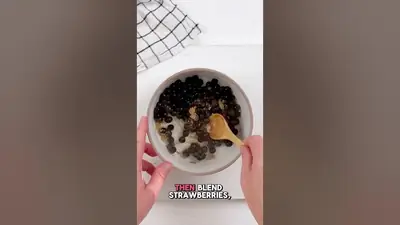

The BEST Homemade Boba Smoothie Ever (like Boba Tea but better!)

Ingredients
- strawberries
- banana
- yogurt
- milk
- maple syrup
Steps
- Boil some tapioca pearls and mix them with a little brown sugar, then blend strawberries, a frozen banana, coconut yogurt, almond milk, and a splash of maple syrup.
- Stir in the sweet tapioca pearls.
From the video's narration and on-screen text, by @thepickyeater on YouTube. Open original